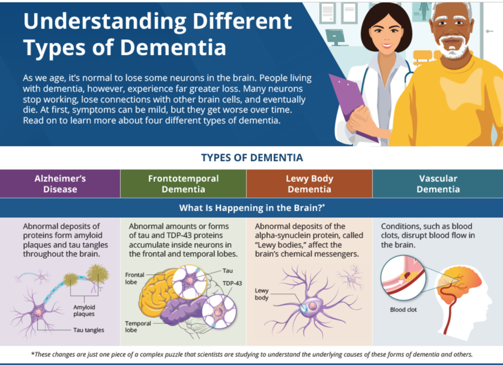
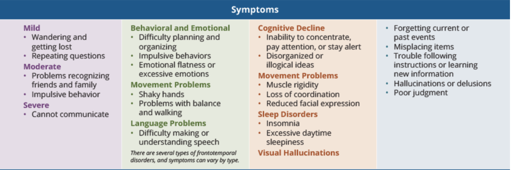

The purpose of this website is to provide information about types of dementia, resources for family and friends, advocacy information to get involved in your community, and treatment options information.
The diagnosis of dementia is a term used to describe a lot of symptoms altogether that cause memory loss, reasoning, or thinking. This information is at this url: www.nia.nih.gov/health/infographics/understanding-different-types-dementia
Click on the image below to view a video about preventing dementia.
Signs of dementia in daily life are short term memory loss, reasoning, or thinking. Symptoms of dementia in one's day are: short term memory problems traveling, remembering appointments, planning activities in the day, paying bills, keeping track of things of where you put them, or organizing them. Many conditions are progressive, which means that the signs of dementia start out slowly,and gradually get worse.
If you or someone you know is experiencing memory difficulties or other changes in thinking skills, don't ignore them. See your doctor, a geriatric physician and a neurologist, soon to determine the cause. Professional evaluation may detect a treatable condition. If the symptoms suggest dementia, early diagnosis allows a person to get the maximum benefit from available treatments and provides an opportunity to volunteer for clinical trials or studies.